Happy Birthday Hailey!
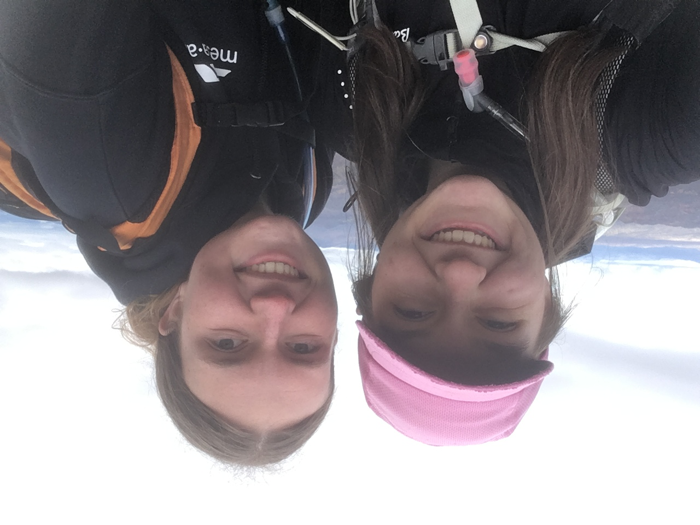
Hailey, happy happy happy birthday you absolute nerd!
I hope you have the best nineteeth birthday possible (even though
it'll probably be lame because I dont live in Provo-ville but whatever) and
I hope you eat tons of donuts:). I made this website not becuase I forgot to write
and send a letter *ahem* but because I super love you and definitley wanted
to show off that I know how to make a website lol.
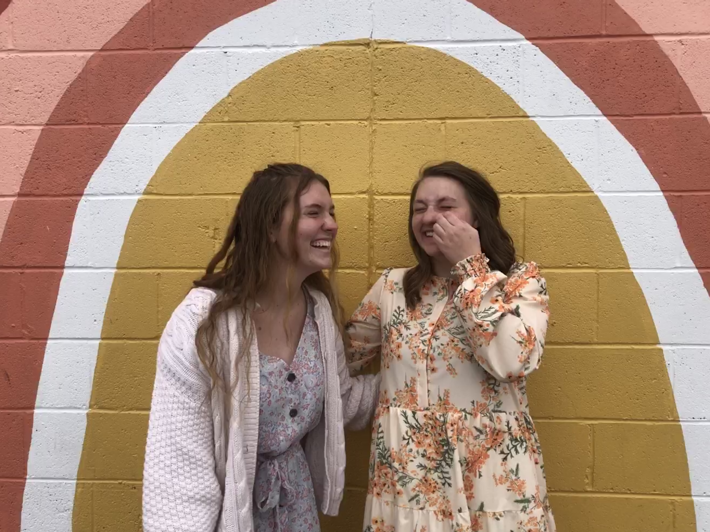
I picked some of my favorite pictures we've taken toegther (and some random ones
but honestly they're all the best so who really cares haha) and I hope that you know that you are
my favorite person on this entire planet. We are definitley gonna be together when we grown old and
we'll get to be the popular people in the nursing home together because that would be an freaking riot. Anyway,
I hope you have the tissues ready because I'm definitley about to get super sappy so sit tight and get ready
for the emotional ride of a lifetime....actually that just put a lot of pressure on me so forget all of that
but get ready for something cute I hope haha
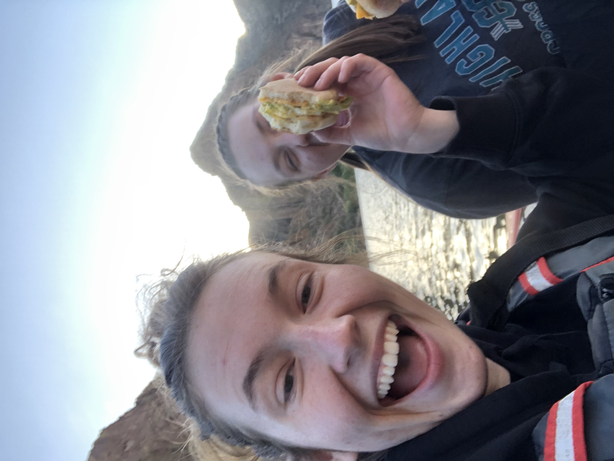
Hailey, with a lot of my friends I look back and find myself wondering 'how the heck did we even
become friends' and with you there is no exception lol I still have no idea how this happened. However,
I do remeber my first impression of you. I remeber the day Mr. Bennett introduced to the band and I remeber my
first thought was 'dang my girl got into symphonic band on her first try'. I would say that that is just straight up talent, but
I know for a fact just how hard you work to be as good as you are. Hailey you are an incredible oboeist and musician.
Your deication to your passion inspires me every. single. day. Seeing you put in the effort and the work it takes
even get started on this path is amazing. I know for a fact that you are going to inspire so many people with your playing
and your example. I'd like to personally thank you for giving me the incredible opportunity to be apart of that origin story :)
 A couple of months before I met you I was going through one of the owrst times of my life.
I felt like I didn't have any friends and I would sit at home alone all the time. Up until I met you Hailey,
I felt like there was nobody in my life who I could honestly call my best friend without feeling a little fake.
However I can tell you with one hundred percent confidence that you are the best friend I have had and will ever have
in my wntire life. There is quite literally nobody who can make me laugh as hard as you. There is nobody who challenges me
sarcastically as much as you. It is so so easy to be around you Hailey. There is nobody I'd rather gorge on Krispy Kreme ith, and nobody
I'd rather judge chicken sandwhiches with.
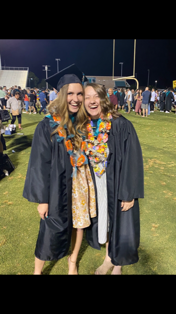
Those reasons are exactly why coming to BYUI was so difficult. You and Eliza had both gotten into BYU
and I had never been more scared of loosing a friendship than I was that night I opened that admissions email.
But as that first semester started and we texted and sent memes and talked on the phone all the time, I never felt like
our connection waviered. When you came to Idaho to visit that was the best rfeaking weekend of my entire life. On a seperate,
but not totally seperate note something I realized the other day is there are exactly three people on this planet that
I can hold a phone converstaion with my mom, Emma Finchum, and you. Being able to talk to you on the phone for hours and hours and
never feel uncomfortable is the best feeling in the world. I honestly doubt that I'll even be able to have a relationship
like that with my husband lol.
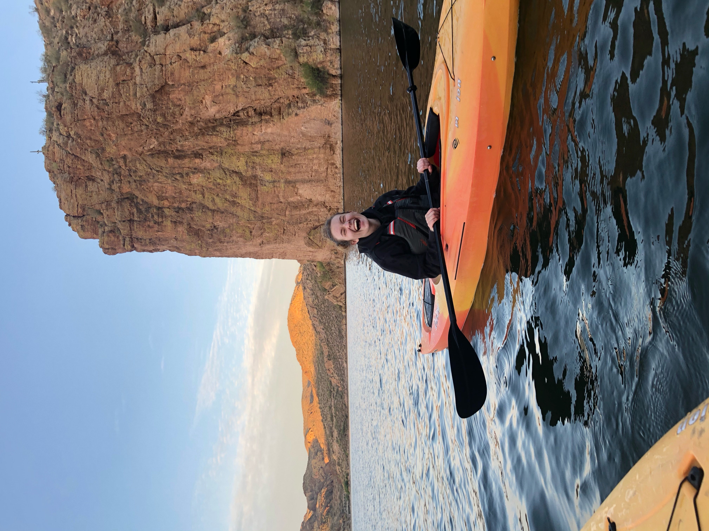
You are going on a mission ahhhhhh! Hailey you are going to be an incredible missionary. There are so many people
in this world who are in depserate need of you in their lives. Your ability to connect with people is amazing. You
are going to bless so many lives. Your ability to be able to go from making people laugh so hard they wanna
throw-up straight into a very deep and serious converstation is so cool. You bet your freaking life that I'm going to email you every single week.
You're going to hear from me so much your going to want to murder me haha. I swear if you ever say that your husband is your best friend I
am going to burn your house to the ground....out of love.
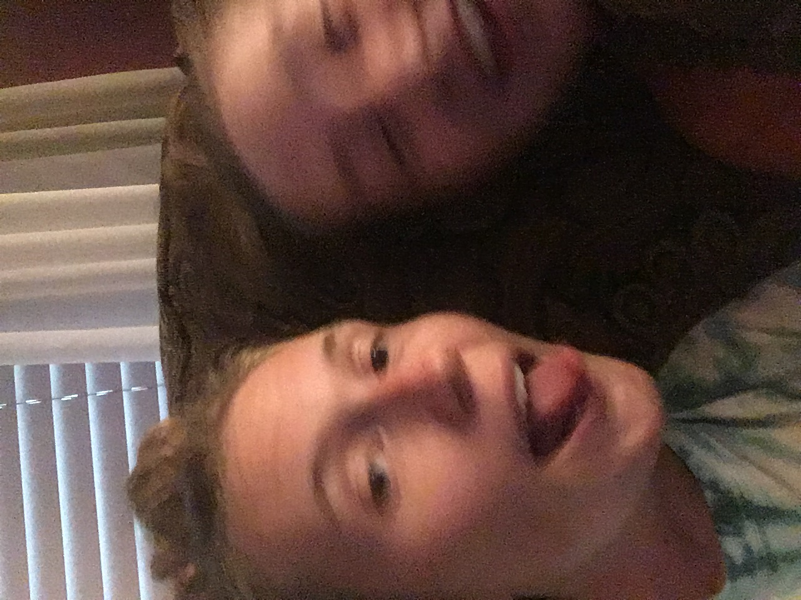
Thank you, thank you, thank you for being my best friend. Thank you for enriching my life
and making me so happy. You are the best person I have ever met and anyone who meets you
has no idea how lucky they are. Heavenly Father spent a lot of time on you becuase I know that there's
no other way to explain how amazingly wonderful you are. I love you so so much Hailey!
Eat lots of Cadbury Eggs and take big naps :))) <3 <3
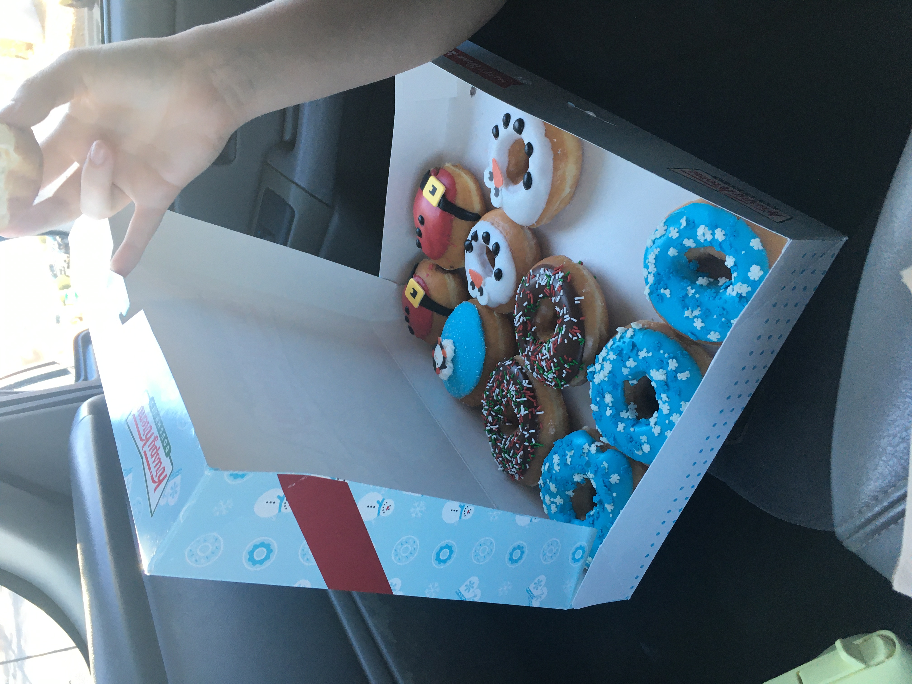
A couple of months before I met you I was going through one of the owrst times of my life.
I felt like I didn't have any friends and I would sit at home alone all the time. Up until I met you Hailey,
I felt like there was nobody in my life who I could honestly call my best friend without feeling a little fake.
However I can tell you with one hundred percent confidence that you are the best friend I have had and will ever have
in my wntire life. There is quite literally nobody who can make me laugh as hard as you. There is nobody who challenges me
sarcastically as much as you. It is so so easy to be around you Hailey. There is nobody I'd rather gorge on Krispy Kreme ith, and nobody
I'd rather judge chicken sandwhiches with.
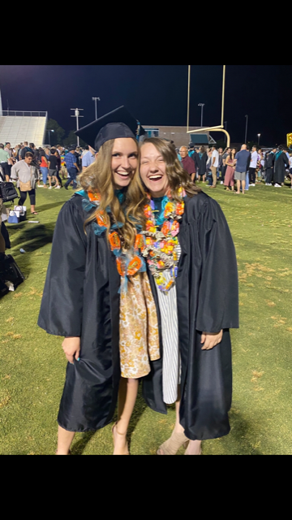
Those reasons are exactly why coming to BYUI was so difficult. You and Eliza had both gotten into BYU
and I had never been more scared of loosing a friendship than I was that night I opened that admissions email.
But as that first semester started and we texted and sent memes and talked on the phone all the time, I never felt like
our connection waviered. When you came to Idaho to visit that was the best rfeaking weekend of my entire life. On a seperate,
but not totally seperate note something I realized the other day is there are exactly three people on this planet that
I can hold a phone converstaion with my mom, Emma Finchum, and you. Being able to talk to you on the phone for hours and hours and
never feel uncomfortable is the best feeling in the world. I honestly doubt that I'll even be able to have a relationship
like that with my husband lol.
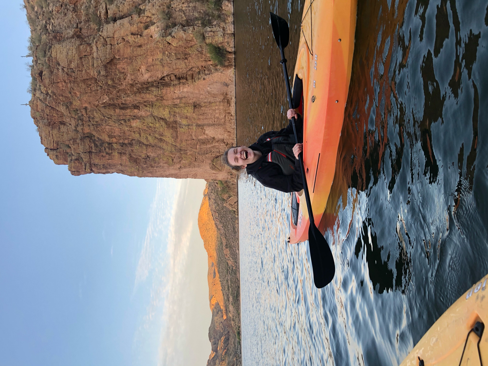
You are going on a mission ahhhhhh! Hailey you are going to be an incredible missionary. There are so many people
in this world who are in depserate need of you in their lives. Your ability to connect with people is amazing. You
are going to bless so many lives. Your ability to be able to go from making people laugh so hard they wanna
throw-up straight into a very deep and serious converstation is so cool. You bet your freaking life that I'm going to email you every single week.
You're going to hear from me so much your going to want to murder me haha. I swear if you ever say that your husband is your best friend I
am going to burn your house to the ground....out of love.
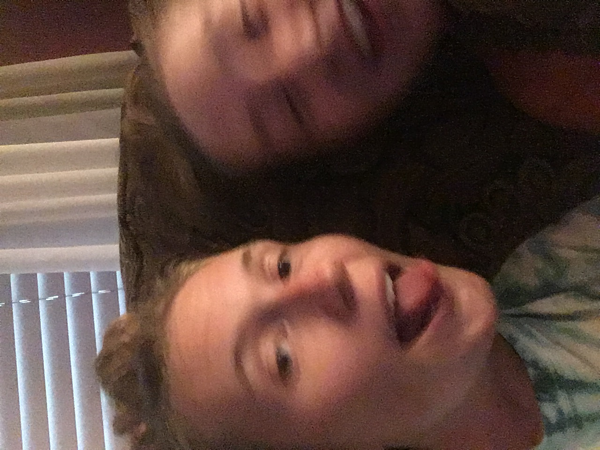
Thank you, thank you, thank you for being my best friend. Thank you for enriching my life
and making me so happy. You are the best person I have ever met and anyone who meets you
has no idea how lucky they are. Heavenly Father spent a lot of time on you becuase I know that there's
no other way to explain how amazingly wonderful you are. I love you so so much Hailey!
Eat lots of Cadbury Eggs and take big naps :))) <3 <3
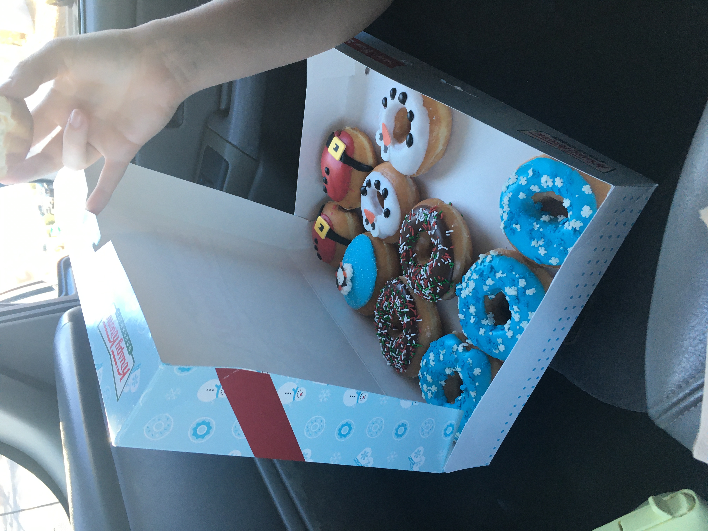
Love, Mr. B